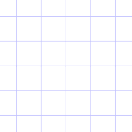

Juicy's Locator Map Calculator
Bedrock Edition has a feature called "Locator Maps" which can be used to track where players are at the moment.
However, on anarchy servers, this can be used to track any player on the server.
But there wasn't an easy and intuitive way to track people even with locator maps at the time, so here it is.
Coordinates:
Now, roughly click on where your cursor (the white one) is on the map.
